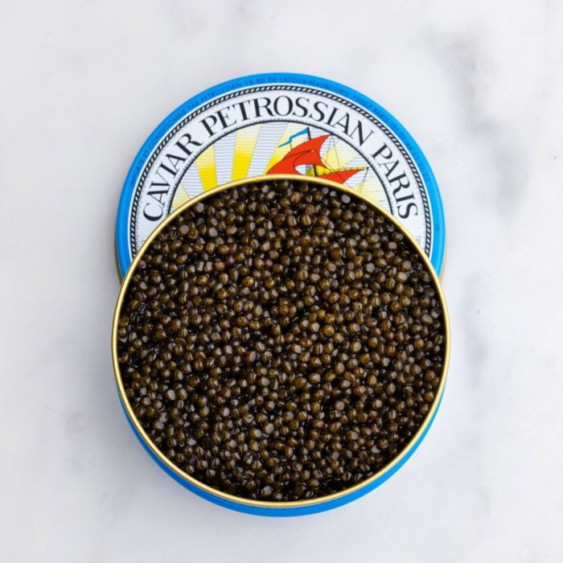
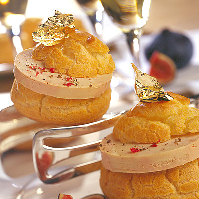

Espace Plats
Voici une liste non exostive de nos mets , le plaisir des yeux avant le plaisir du ventre , yummy yummy comme dirait les grecs !
Caviar de russie
Sa structure délicate et ses élégants reflets dorés séduisent tous les amateurs. Il présente des saveurs marines et des notes de noix vertes parfaitement équilibrées. Profiterole au foie gras
Il s’agit de foie gras finement broyé, assaisonné, émulsionné et reconstitué. Préférez le bloc de foie gras avec morceaux. Croissant speculos
Le spéculoos constitue toujours une bonne idée, surtout sur notre croissant au crumble de spéculoos!